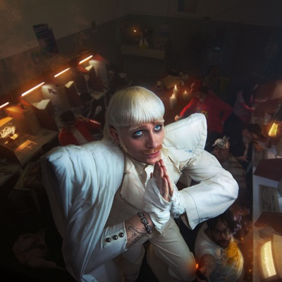
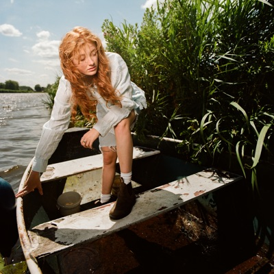
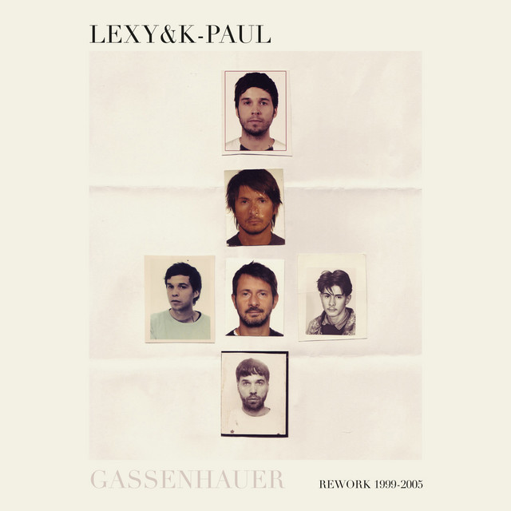
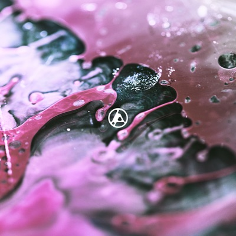
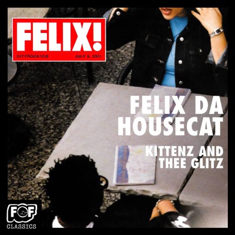
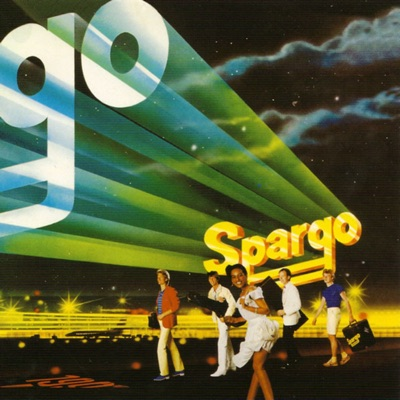
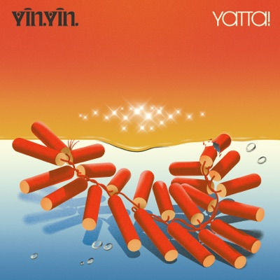
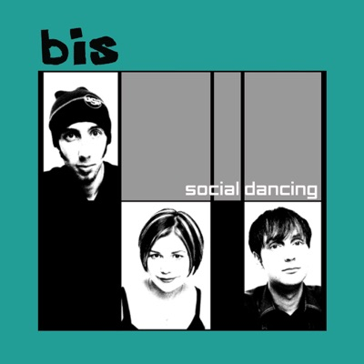

yo i'm alex.
Founding Engineer @ LangWatch, building tools across analytics, productivity, and reverse engineering. Amsterdam, NL.
more about mestart

i like apis and reverse engineering. observability, event-driven systems, and ai is okay too i guess.
- working on the @langwatch/platform 🏰
- working on the @langwatch open source sdk's (typescript 💻, python 🐍, go ⚡)
- a 💅 stylish 💅 local and mutli-model AI assistant over at 0xdeafcafe/bloefish
- a chirpy 🐦 and feathery 🪶 API crafting tool over at getbeak/beak
in rotation









top artists
recently played


soundcloud likes


open source
langwatch
The platform for LLM evaluations and AI agent testing
tslsp mcp
MCP server exposing the TypeScript language server (tsgo) — type-aware rename, references, definition, hover, symbols, diagnostics for Claude Code
workforest
VS Code extension for viewing Claude Code git worktrees
airpods pro lapse
blends and delays cross-channel audio. designed in my head, built by claudius. loved by audiophiles and hopefully not the other kind of phile.
terminal surfer
a lil 🤏 ASCII endless dodger. watch the lil guy play chicken with trains, hoards coins, and vibe until you kill him
moron
✨ vibe ✨ coded git client
react contextual analytics
React Contextual Analytics is an context-driven approach to blah blah
cypher swift
Cipher algorithm to encode data into Taylor Swift lyrics
fucking focus
A pretty fucking simple way to keep your fucking focus. 🧘 📣
ezy qr
Easily generate QR codes in the browser.
pillar box
Brings the "AutoFill for SMS codes" feature from Safari to Chromium based browsers. MacOS only.
assembly
Multi-Generation Blam Engine Research Tool
go xbdm
A go library for interacting with an Xbox 360 Development Kit.
branch
Advanced Halo Stats
metro wpf template
A WPF Template for Quickly creating Metro themed Applications.
snapchat spam
Fucking advanced app to spam people with useless snaps on snapchat.
imgur net
Imgur API library for .NET
snap dot net
Snapchat for Windows Phone 8.1
vintage
Halo 4 Film Modification Tool
gmusic wp
Google Music done right. For Windows Phone.